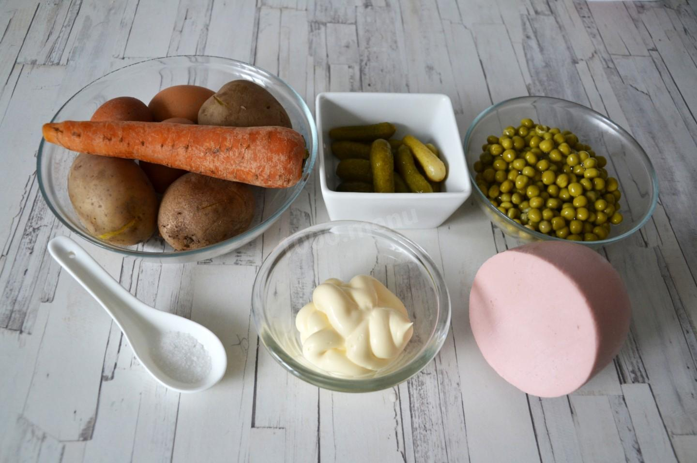
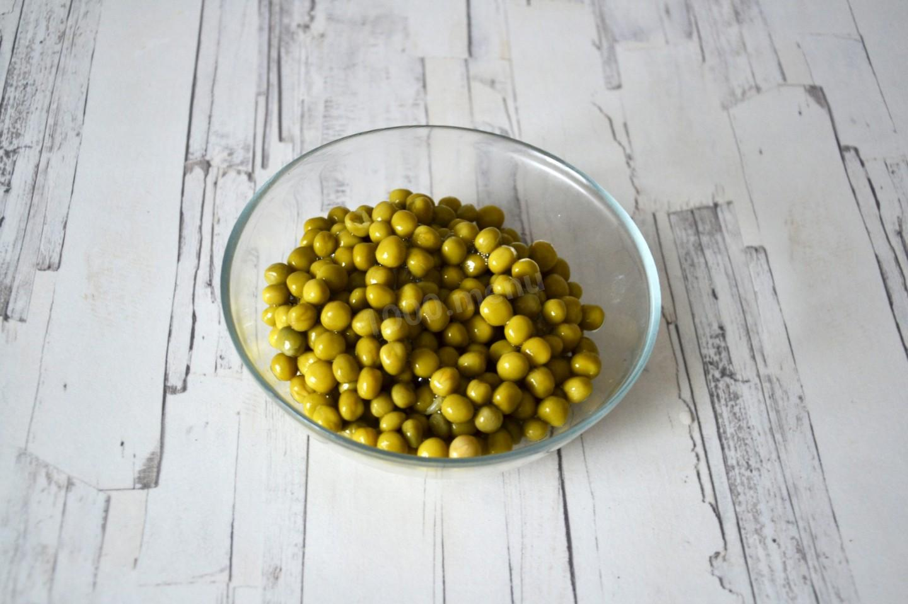
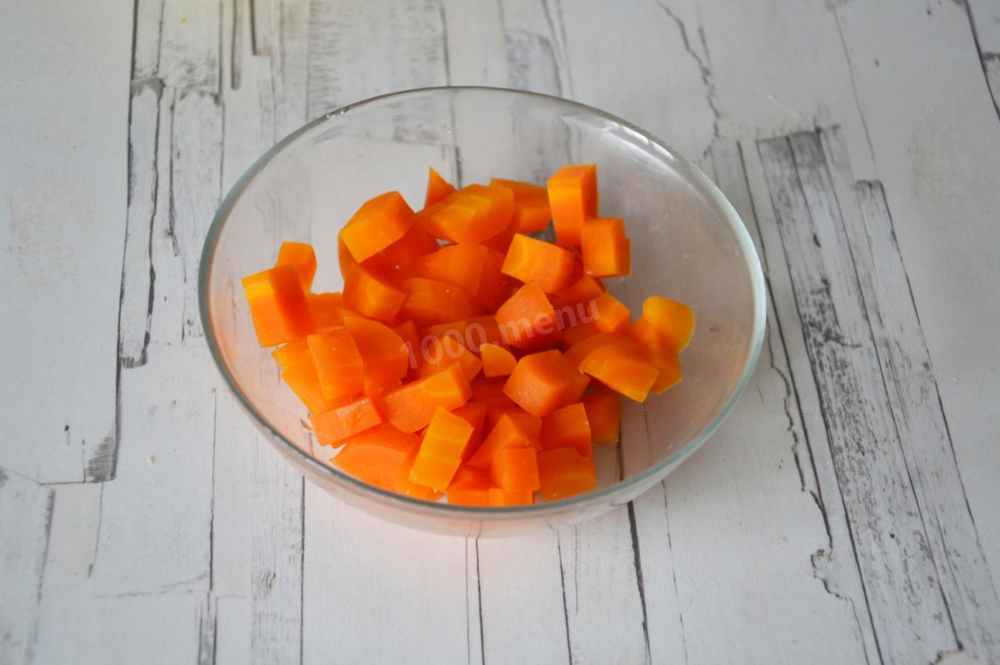
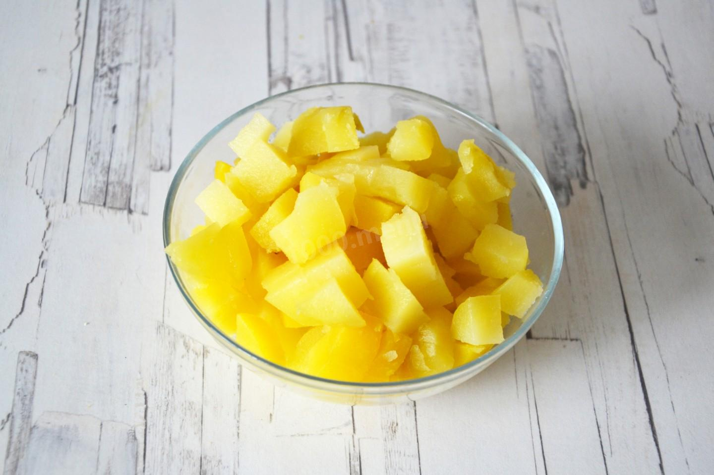
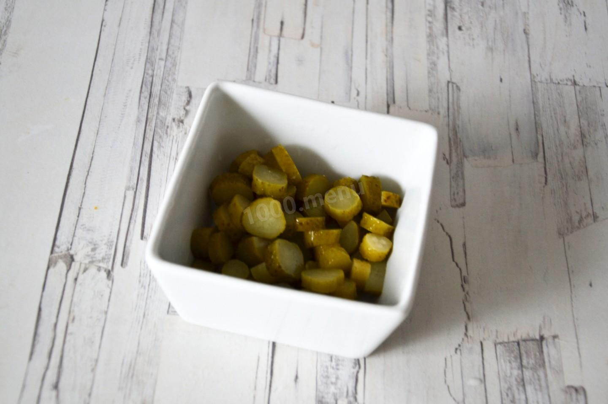
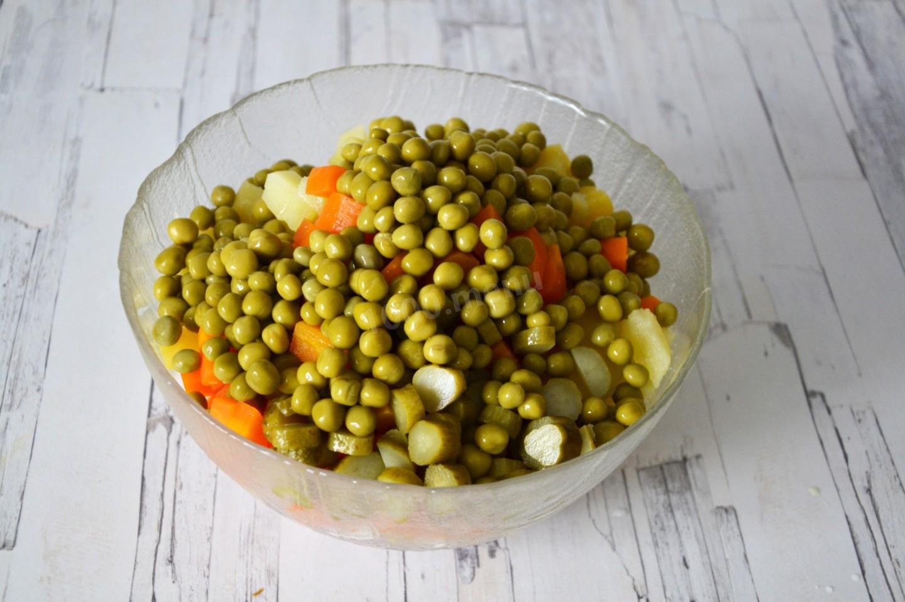
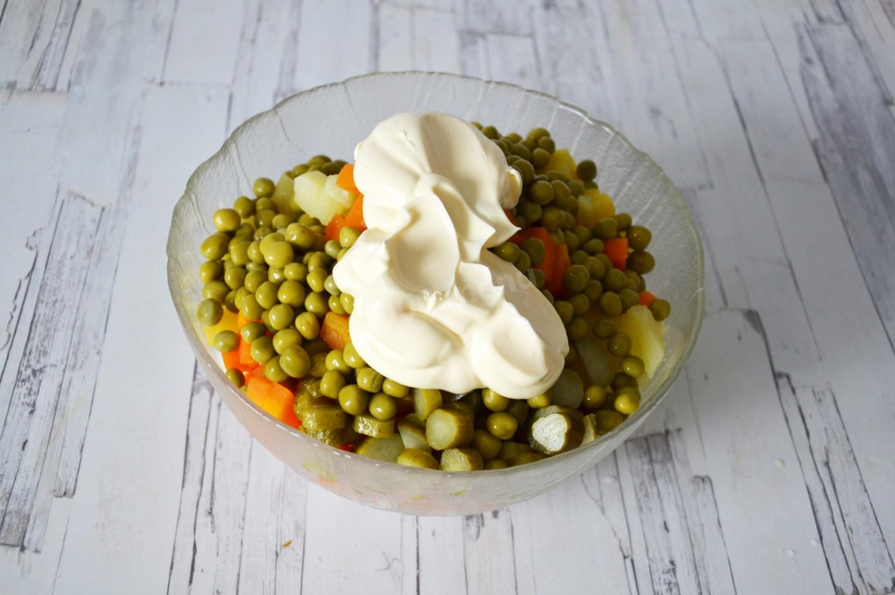
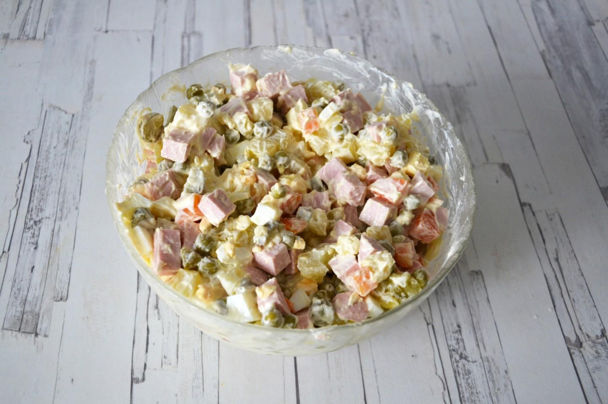

Пошаговое приготовление
⏱ Время приготовления: 2 ч 30 мин
Шаг 1:
Как сделать оливье с колбасой? Подготовьте необходимые ингредиенты. Картофель и морковь отварите заранее и остудите. Куриные яйца отварите вкрутую, также охладите их и очистите от скорлупы. Вареную колбасу можете взять любую, на свой вкус. Огурцы могут быть соленые или маринованные, это не критично.
Шаг 2:
Из банки зеленого горошка слейте жидкость, а сам горошек откиньте на дуршлаг и дайте полежать какое-то время. Это хорошо делать, чтобы салат не "поплыл" - мы даем всем излишкам влаги высохнуть.
Шаг 3:

Lorem
Шаг 4:
Lorem
Шаг 5:
Lorem
Шаг 6:
Lorem
Шаг 7:
Lorem
Шаг 8:
Lorem
Шаг 9:
Lorem